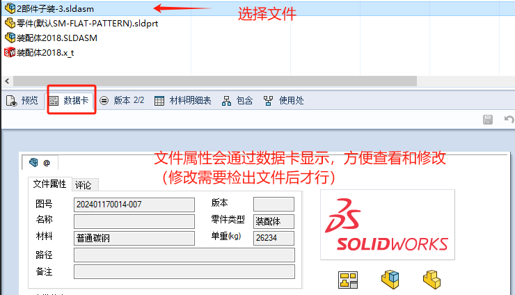

PDM客户端-功能
客户端界面

用户
在用户里，可以进行注销登出操作，也能查看PDM关于以及帮助手册。

菜单栏

操作
操作-检入
对于<私有状态>文件，其他电脑是看不到的，你需要进行【操作-检入】，将私有文件，上传到PDM数据库中，此时文件才算正式入库。


操作-检出
因为<检入状态>的文件是在库中只读的文件，如需对库中文件进行编辑，则需要进行【操作-检出】处理。

操作-查看版本
在检出检入过程中，文件会进行过程版本的记录控制，我们也能在【操作-获取版本】这里，查看到修改的历史版本文件，以及对应修改的评论说明

修改
- 设置参考引用
graph LR 子文件复制-->检出父文件-->粘贴为参考引用-->检入父文件

- 解除参考引用
graph LR 检出父文件-->编辑参考-->取消勾选参考-->检入父零件

显示
【历史记载】

【属性】-已删除项（回收站）
您可在文件夹的属性对话框中查看删除的文件列表。如果您具有正确的用户权限，您可恢复或销毁文件夹和列表中的文件。

工具
【分支&合并】
【复制树】
具备权限的用户可以对带参考引用的文件进行【复制树/移动树】。类似于SOLIDWORKS的打包。

【移动树】

【更新参考引用】
【脱机工作】
图片是点了“脱机工作”后的界面。文件夹图标显示蓝色，并且PDM联机工具会受限（例如：检入检出等操作将不可用），

【通知】
默认是PDM的信息通知
当用户需要知道文档变化状态的时候自动通知自己，可以使用设置通知的功能。

自定义
自定义工具栏
文件列表
属性列表

文件夹图标
SOLIDWORKS® PDM 中的文件夹颜色含义如下：

绿色 - 联机，文件夹在文件库中，可以访问文件库中数据

蓝色 - 脱机，文件夹在文件库中，但是当前用户处于脱机模式
灰色 - 本地文件夹，在本地文件库视图中，但不在文件库数据库中。可能是尚未添加到库的文件夹，或是已从库中删除的文件夹的旧缓存副本。或是当前登录的用户没有查看特定文件夹的库访问权限。

预览窗口
预览标签

数据卡
在选择文件后，【预览窗口-数据卡】会显示该文件的属性，方便查看和修改(修改需要检出文件后才行)
版本
材料明细表
包含
文件参考：（SW装配体和零部件的参考默认是生效的，对于其他的文件我们需要手动进行【修改-复制链接-粘贴为参考引用】）
使用处
搜索
文件名搜索
嵌入式的搜索
搜索工具
模糊搜索
属性搜索
多条件搜索
结果输出
收藏搜索
参考：[SOLIDWORKS PDM快速搜索工具 - 知乎 (zhihu.com)](https://zhuanlan.zhihu.com/p/512512933#:~:text=要访问“快速搜索变量列表”，请打开 PDM 管理工具，然后展开“列表”，右键单击“快速搜索变量列表”并选择“新建列表” 在新列表中，您可以将其自定义为最多,5 个您想要的附加变量，在我的示例中，我使用这 5 个附加变量并将它们分配给我在PDM库中可用的用户。)